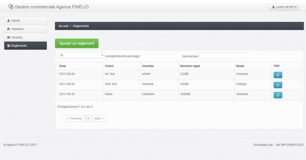
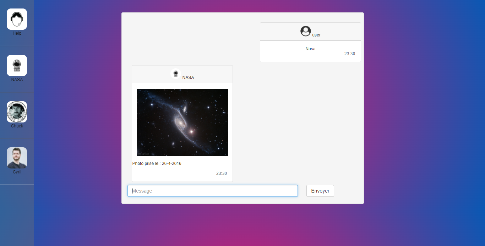
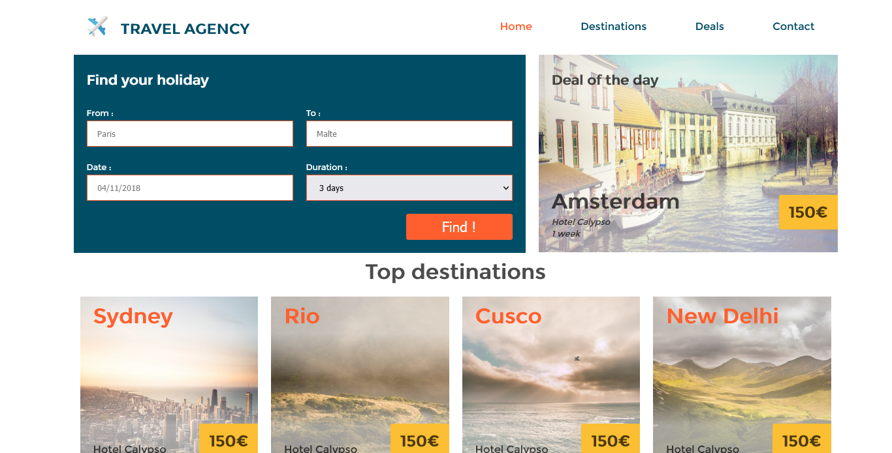
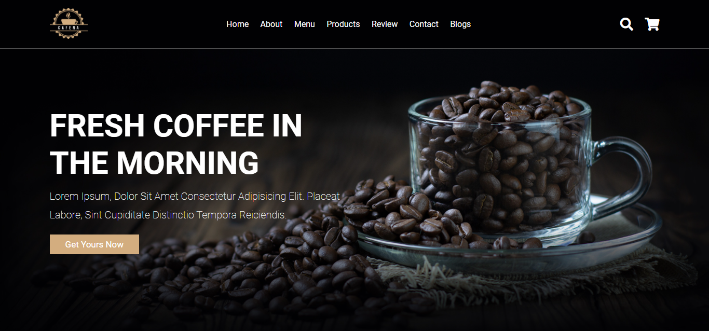

My biggest Project :
The connected trash bin
End of study project for my bachelor's degree
The idea of setting up connected bins is to improve
the trajectory of the collection trucks.
To do this, we have to install various sensors (weighing, ultrasound, magnetic, location, etc.) on the bins,
thus enabling the treatment centre to know their status. Indeed, there is no point in emptying a bin that is
not considered full.
The status of the bin is sent to the processing centre by means of a remote communication, which will then
allow the trucks to know which route to take.
Language used : HTML, CSS, PHP, MySLQ, C++
Finelio
for JIM INFORMATIQUE

The objective of this internship project was to develop a
application that communicates with a database.
A connection to the application was therefore required to access the application.
Once logged in, the user had to be able to view the data of clients, sites and the status of invoices that
were stored in the database
If there is no data, it should be possible to insert into the database from the web interface. Still
from the application, the user should be able to modify the data displayed, which will also modify the
data stored in the database.
The billing data should then be converted to PDF.
Language used : HTML, CSS, PHP, MySLQ

A chat application that allows a bot to be called from a selection of 4, each of which is linked to its own API. Once called, the bot will return the result of a request made to an API. Bots can react from other bot's reaction
Language used : HTML, CSS, JS

An application created with React. We connect to an API to get the weather data of the city.
Language used : JS
NaturEmoi
Personnal project

One of the first responsive site I made to train myself in front-end development
Language used : HTML, CSS

Responsive website for a travel agency. Please be aware that the REACT version of this site is coming very soon.
Language used : HTML, CSS
Coffe shop
personal project

Responsive website made to develop my knowledge in front-end development
Language used : HTML, CSS